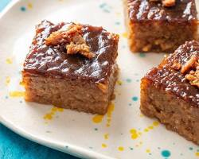

INGREDIENTS
- 2 cups glutinous rice, washed and soaked for at least 2 hours
- 1 cup brown sugar
- 1 can (400 ml) coconut milk
- 1 can (400 ml) water
- 1/2 teaspoon salt
- Pandan leaves (optional)
- 1 can (400 ml) coconut milk
- 1/2 cup brown sugar
|

|
PROCEDURE
- Prepare the latik (optional): In a separate pan, combine the coconut milk for the latik and brown sugar. Bring to a boil and simmer over low heat, stirring constantly, until it thickens and turns golden brown (about 30 minutes). Set aside.
- Cook the rice: Drain the soaked glutinous rice and transfer it to a pot. Add the coconut milk, water, salt, and pandan leaves (if using). Bring to a boil over medium heat, then reduce heat and simmer for 30-40 minutes, stirring occasionally, until most of the liquid is absorbed and the rice is partially cooked.
- Add sugar and finish cooking: Add the brown sugar to the rice and stir well. Continue cooking over low heat for another 15-20 minutes, stirring frequently, until the sugar is dissolved and the rice is sticky and translucent.
- Transfer and cool: Transfer the cooked biko to a greased baking dish or banana leaves lined baking tray. Press down to flatten the surface. Top with the latik syrup (if using) and spread evenly.
- Cool and serve: Let the biko cool completely before cutting into squares or diamond shapes. Serve at room temperature.
|
Biko is a rich, chewy Filipino rice cake made with sticky rice, coconut milk, and dark sugar.
Traditionally served in a round, shallow bamboo tray lined with banana leaves known as a bilao, biko belongs to a category of sweets called kakanin, which is made up entirely of rice cakes. |